토목산업기사 (2002-05-26 기출문제)
1과목: 응용역학
1. 그림과 같은 구조물의 C점에 300kgf의 물체가 매달려 있으면 T2부재가 받는 힘은 얼마가 되겠는가? (단,
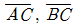
부재의 단면은 같고 재료도 같으며, A, B, C 점은 전부 힌지로 되어 있다.)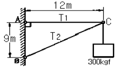
- 300kgf
- 500kgf
- 900kgf
- 1500kgf
(정답률: 알수없음)

2. 그림과 같은 반지름 r 인 반원의 X 축에 대한 단면 1차 모멘트는?
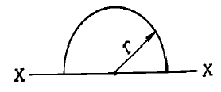
- 3r3 / 2π
- 2r3 / 3π
- πr3 / 6
- 2r3 / 3
(정답률: 알수없음)
3. 그림과 같은 빗금친 부분의 y축 도심은 얼마인가?
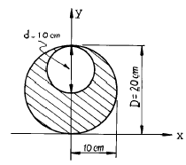
- x축에서 위로 5.00 ㎝
- x축에서 위로 10.00 ㎝
- x축에서 위로 11.67 ㎝
- x축에서 위로 8.33 ㎝
(정답률: 알수없음)
4. 훅크 법칙(Hooke's law)과 관계있는 것은?
- 소성
- 연성
- 탄성
- 취성
(정답률: 알수없음)
5. 다음 단순보에서 C단면의 휨모멘트는?
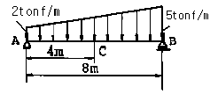
- 24 tonf·m
- 28 tonf·m
- 32 tonf·m
- 40 tonf·m
(정답률: 알수없음)
6. 주응력에 관한 설명중 틀린 것은?
- 주응력이 일어나는 주단면에는 전단응력이 작용하지 않는다.
- 주응력면에 작용하는 법선응력을 주응력이라 한다.
- 최대, 최소의 법선응력이 되는 단면을 주응력면이라 한다.
- 법선응력이 최대, 최소로 되는 면과 전단응력이 최대, 최소로 되는 면은 90° 의 각을 이룬다.
(정답률: 알수없음)
7. 하중을 받고 있는 다음 보 중에서 최대 처짐량이 가장 큰 것은? (단, 보의 길이, 단면치수 및 재료는 동일하고 P=wℓ , ℓ 은 보의 길이)
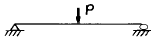
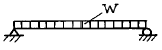
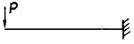
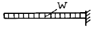
(정답률: 알수없음)
8. 모멘트 하중을 받는 단순보의 B점의 처짐각은? (단, (+)는 시계방향, (-)는 반시계방향)
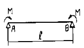
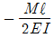
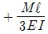
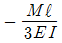
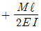
(정답률: 알수없음)
9. 단면이 같을 경우 다음 그림과 같은 길이를 갖는 압축재의 좌굴길이에 관한 설명으로 옳은 것은?
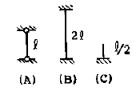
- (A), (B), (C) 모두 같다.
- (B)가 최대 (C)가 최소
- (B)가 최대 (A)가 최소
- (C)가 최대 (B)가 최소
(정답률: 알수없음)
10. 그림의 직사각형 ABCD는 기둥의 단면이다. 이 단면의 핵(kernel, core)을 EFGH라고 할 때 FH/BC의 값은?
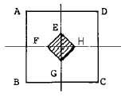
- 1/6
- 1/2
- 1/3
- 1/4
(정답률: 알수없음)
11. 그림과 같은 트러스에 있어서 a 부재에 일어나는 부재내력은?
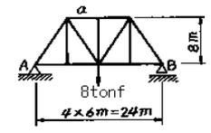
- -6 tonf
- -5 tonf
- -4 tonf
- -3 tonf
(정답률: 알수없음)
12. 그림과 같은 3활절 라멘(Rahmen)에서 B점의 휨모멘트 MB의 크기는?
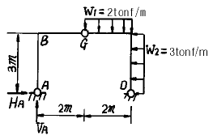
- (-) 8.76 tonf·m
- (-) 13.13 tonf·m
- (-) 12.00 tonf·m
- (-) 27.14 tonf·m
(정답률: 알수없음)
13. 길이 ℓ , 직경 d인 원형 단면봉이 인장하중 P를 받고 있다. 응력이 단면에 균일하게 분포한다고 가정할 때, 이 봉에 저장되는 변형에너지를 구한 값으로 옳은 것은? (단, 봉의 탄성계수는 E이다.)
- 4P2ℓ / πd2E
- 2P2ℓ / πd2E
- 4Pℓ2 / πd2E
- 2Pℓ2 / πd2E
(정답률: 알수없음)
14. 부정정 구조물의 여러 해법중에서 연립방정식을 풀지 않고 도상에서 기계적인 계산으로 미지량을 구하는 방법은 다음중 어느 것인가?
- 처짐각법
- 3연 모멘트법
- 요각법
- 모멘트 분배법
(정답률: 알수없음)
15. 휨강성 EI가 일정한 다음과 같은 부정정보에서 MA는?
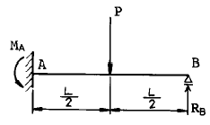
- 11PL / 16
- 7PL / 16
- 5PL / 16
- 3PL / 16
(정답률: 알수없음)
16. 다음 그림과 같이 양단이 고정된 강봉이 상온에서 20℃만큼 온도가 상승했다면 강봉에 작용하는 압축력의 크기는? (단, 강봉의 단면적 A=50cm2, E=2.0 × 106kgf/cm2, 열팽창계수 α =1.0 × 10-5 (1℃에 대해서) 이다.)
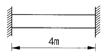
- 10 tonf
- 15 tonf
- 20 tonf
- 25 tonf
(정답률: 알수없음)
17. 다음의 단순보에서 C점의 휨모멘트 값은 얼마인가?
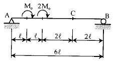
- Mo
- 1.5Mo
- 2Mo
- 3Mo
(정답률: 알수없음)
18. 다음 구조물에서 하중이 작용하는 점에서의 수직 처짐을 구하면?
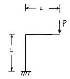
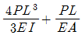
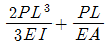
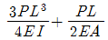
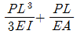
(정답률: 알수없음)
19. 다음 중 힘의 3요소가 아닌 것은?
- 크기
- 방향
- 작용점
- 모멘
(정답률: 알수없음)
20. 평면응력상태 하에서의 모아(Mohr)의 응력원에 대한 설명으로 올바른 것은?
- 최대 전단응력의 크기는 두 주응력의 차이와 같다.
- 모아원 중심의 x 좌표값은 직교하는 두 축의 수직응력의 평균값과 같고 y 좌표값은 0이다.
- 모아의 원이 그려지는 두 축 중 연직(y)축은 수직응력의 크기를 나타낸다.
- 모아의 원으로부터 주응력의 크기는 구할 수 있으나 방향은 구할 수 없다.
(정답률: 알수없음)
2과목: 측량학
21. 도로 선형계획시 교각이 25° , 반경 300m일 때와 교각이 20° , 반경 400m일 때의 외선장 E의 차이는 얼마인가?
- 6.284m
- 7.284m
- 2.113m
- 1.113m
(정답률: 알수없음)
22. 우리나라 수준원점의 소재지 및 표고 값으로 옳은 것은?
- 국립지리원, 25.2532m
- 국립천문대, 26.1745m
- 인하대학교, 26.6871m
- 수원대학교, 27.7634m
(정답률: 알수없음)
23. 항공사진의 표정시 상호표정인자가 아닌 것은?
- κ
- bx
- by
- bz
(정답률: 알수없음)
24. 노선측량에서 곡선을 분류한 것으로 틀린 것은?
- 곡선은 크게 수평곡선과 연직곡선으로 나눈다.
- 머리핀 곡선은 수평곡선 중 원곡선에 속한다.
- 3차 포물선은 수평곡선 중 완화곡선에 속한다.
- 렘니스케이트는 수직곡선 중 종단곡선이다.
(정답률: 알수없음)
25. 다음 그림과 같은 다각측량에서 B점의 좌표는? (단,
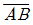
= 200m)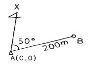
- X=128.56m, Y=153.21m
- X=131.27m, Y=153.21m
- X=128.56m, Y=164.29m
- X=131.27m, Y=164.29m
(정답률: 알수없음)
26. 화면거리 153mm의 카메라로 고도 800m에서 촬영한 수직사진 한장에 찍히는 실제면적은? (단, 사진의 크기는 23cm×23cm 이다)
- 1.446km2
- 1.840km2
- 5.228km2
- 5.290km2
(정답률: 알수없음)
27. 기선의 길이 500m 를 측정한 지반의 평균표고가 18.5m 이다. 이 기선을 평균해면상의 길이로 환산한 보정량은? (단, 지구의 곡률반경은 6370km이다)
- + 0.35 cm
- - 0.35 cm
- + 0.15 cm
- - 0.15 cm
(정답률: 알수없음)
28. 다음과 같은 그림에서 각주공식을 이용하여 체적을 산정하면? (단, A1 = 10m2, A3 = 5m2, A2 = 3m2 임)
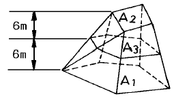
- 54 m3
- 66 m3
- 108 m3
- 135 m3
(정답률: 알수없음)
29. 시거측량에서 연직각=15° , 협장=1.64m, 기계의 승정수=100, 가정수=30cm일 때 수평거리는?
- 11.60 m
- 153.30 m
- 153.01 m
- 41.08 m
(정답률: 알수없음)
30. 그림과 같이 장애물로 인하여 임의점 C, D를 정하고 다음과 같은 결과를 얻었다. 이 때
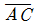
의 거리는? (단, A=곡선시점, R=500m, ∠ACD=140°, ∠BDC=120°, CD=350m 임)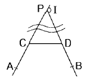
- 288.1m
- 286.2m
- 297.8m
- 288.8m
(정답률: 알수없음)
31. 어떤 측선의 방위가 S 30° W 이고 길이가 150m라면 그 측선의 경거는?
- -75m
- 75m
- -130m
- 130m
(정답률: 20%)
32. A점과 B점 사이의 표고차를 구하기 위해 3개의 구간으로 나누어 수준측량을 실시하였다. 구간별 평균제곱근오차가 다음과 같을 때 A점과 B점 사이의 표고차에 대한 평균제 곱근오차는?
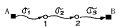
- ± 0.006 m
- ± 0.007 m σ 1 = ± 0.006 m
- ± 0.010 m σ 2 = ± 0.008 m
- ± 0.017 m σ 3 = ± 0.003 m
(정답률: 알수없음)
33. 종축척이 1 : 100, 횡축척이 1 : 300인 횡단면 도면의 면적을 구하기 위하여 구적기의 축척 1 : 500으로 측정한 면적이 200m2이었다면 실제면적은 얼마인가?
- 24 m2
- 36 m2
- 48 m2
- 72 m2
(정답률: 알수없음)
34. 접선의 반대방향에 반경(R)의 중심을 갖는 곡선형태는?
- 복심곡선
- 포물선곡선
- 반향곡선
- 배향곡선
(정답률: 알수없음)
35. 다음의 오차 중 최소제곱법으로 처리할 수 있는 오차는?
- 물리적 오차
- 정오차
- 부정오차
- 잔차
(정답률: 알수없음)
36. 다음 중 지형도를 이용하기가 부적당한 것은?
- 댐의 담수량 결정
- 토목공사의 토공량 산정
- 도로의 노선 계획
- 문화재 유적 발굴
(정답률: 알수없음)
37. 지구의 반경을 6400km로 하고 거리의 허용정도를 1/105 이라고 할 때 반경 몇 km까지를 평면으로 볼 수 있는가?
- 70.11
- 55.20
- 35.⑤
- 11.00
(정답률: 알수없음)
38. 다음은 거리측정에서 발생될 수 있는 오차이다. 이 중에서 정오차에 해당하는 것은 ?
- 온도, 습도가 측정시 때때로 변해서 발생하는 오차
- 경사가 일정한 경사지에서 테이프를 경사면에 따라 측정할 때 발생하는 오차
- 측정시 당기는 힘이 일정치 않고 수시로 변할 때 발생하는 오차
- 눈금을 잘못 읽을 때 발생하는 오차
(정답률: 알수없음)
39. 노선측량에서 제1중앙종거(M)은 제3중앙종거(M2)의 몇 배인가?
- 2 배
- 4 배
- 8 배
- 16 배
(정답률: 알수없음)
40. 하천단면의 유속 측정에서 수면으로 부터의 깊이가 0.2h, 0.6h, 0.8h인 지점의 유속이 각각 0.562m/s, 0.497m/s, 0.364m/s 일 때 평균유속이 0.480 m/sec이었다. 이 평균유속을 구한 방법은?
- 1점법
- 2점법
- 3점법
- 4점법
(정답률: 알수없음)
3과목: 수리학
41. 물의 물리적 성질에 대한 설명으로 틀린 것은?
- 1기압의 물은 4℃에서 최대밀도를 가진다.
- 비중을 표시하는 수치와 밀도를 표시하는 수치는 항상 동일하다.
- 순수한 물은 4℃에서 가장 무겁고 비중은 1이다.
- 해수는 담수(淡水)에 비하여 비중이 크다.
(정답률: 알수없음)
42. 흐름의 연속방정식은 다음의 어떤 법칙을 기초로 하여 만들어진 것인가?
- 질량보존의 법칙
- 에너지보존의 법칙
- 운동량보존의 법칙
- 마찰력불변의 법칙
(정답률: 알수없음)
43. 다음 중 토양의 침투능에 미치는 영향이 가장 적은 인자는?
- 포화층의 두께
- 대기중의 상대습도
- 토양의 다짐 정도
- 식생의 피복상태
(정답률: 알수없음)
44. 폭 20m인 구형단면수로에 30.6m3/sec의 유량이 0.8m의 수심으로 흐를 때 Froude수를 구하고 흐름을 판별하면?
- 0.683, 상류
- 0.683, 사류
- 0.874, 상류
- 0.874, 사류
(정답률: 70%)
45. 폭 b = 3.0m, 수심 h = 1.5m 인 구형단면수로에서 수로경사가 0.01 일 때 평균유속은? (단, C = 65 이고 chezy의 유속공식에 의한다)
- 3.42m/sec
- 4.63m/sec
- 5.63m/sec
- 7.53m/sec
(정답률: 알수없음)
46. 부체는 일반적으로 어떤 경우에 기울어지기 쉬운가?
- 부양면에 대한 단면1차 모멘트가 작을수록
- 부양면에 대한 단면1차 모멘트가 클수록
- 부양면에 대한 단면2차 모멘트가 작을수록
- 부양면에 대한 단면2차 모멘트가 클수록
(정답률: 37%)
47. 침투능의 추정법 중에서 우량주상도 상에서 총 강우량과 손실량을 구분하는 수평선에 대응하는 강우강도를 의미하는 것은?
- ø - index법
- P- index법
- N - day법
- S - Curve법
(정답률: 알수없음)
48. 다르시의 법칙(Darcy's law)의 내용을 기술한 것은?
- 점성계수를 구하는 법칙이다.
- 지하수의 유속은 동수경사에 비례한다는 법칙이다.
- 관수로의 흐름에 대한 수류상사의 법칙이다.
- 개수로의 흐름에 대한 수류상사의 법칙이다.
(정답률: 알수없음)
49. 관정의 펌프용 전동기 동력이 100kW, 펌프의 효율은 93%, 양정고는 150m, 손실수두가 10m 일 때 펌프에 의한 양수량은?
- 0.02 m3/sec
- 0.06 m3/sec
- 0.12 m3/sec
- 0.15 m3/sec
(정답률: 알수없음)
50. 하상계수(河狀係數)란 무엇인가?
- 대하천의 주요지점에서의 풍수량과 저수량의 비
- 대하천의 주요지점에서의 최소유량과 최대유량의 비
- 대하천의 주요지점에서의 홍수량과 하천 유지유량의 비
- 대하천의 주요지점에서의 최소유량과 갈수량의 비
(정답률: 알수없음)
51. 다음 중 우리나라의 년평균 강수량에 가장 근사한 값은?
- 820mm
- 1010mm
- 1270mm
- 1450mm
(정답률: 알수없음)
52. 그림과 같이 2.5m × 2.0m의 수직판이 수면으로부터 1.5m 아래 세워져 있다. 이 판에 작용하는 전수압은?
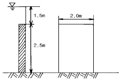
- 16.57t
- 12.00t
- 13.75t
- 15.50t
(정답률: 알수없음)
53. 반원형 흐름 단면의 동수반경(경심)은? (단, D는 직경임)
- D / π
- π / D
- D / 2π
- D / 4
(정답률: 알수없음)
54. 삼각웨어에서 수두측정시 1%의 오차가 발생하였다면 유량에는 몇 %의 오차가 발생하겠는가?
- 1%
- 2%
- 2.5%
- 4%
(정답률: 알수없음)
55. 수면에서 4m 깊이에 중심이 있는 지름 2cm인 작은 오리피스에서 나오는 실제유량은? (단, C = 0.62임)
- 1.624ℓ /sec
- 1.724ℓ /sec
- 1.824ℓ /sec
- 1.924ℓ /sec
(정답률: 알수없음)
56. 다음의 모세관 현상에 대한 설명 중 옳지 않은 것은?
- 모세관의 상승높이는 모세관의 지름 d에 반비례한다.
- 모세관의 상승높이는 액체의 단위중량에 비례한다.
- 모세관의 상승여부는 액체의 응집력과 액체와 관벽의 부착력에 의해 좌우된다.
- 액체의 응집력이 관벽과의 부착력보다 크면 관내 액체의 높이는 관밖보다 낮아진다.
(정답률: 알수없음)
57. 다음 그림과 같이 높이 2m인 물통에 물이 1.5m만큼 담겨져 있다. 물통이 수평으로 4.9m/sec2의 일정한 가속도를 받고 있을 때 물통의 물이 넘쳐 흐르지 않게 하기 위한 물통의 최소 길이는?
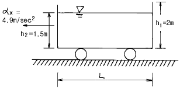
- 2.0m
- 2.4m
- 2.8m
- 3.0m
(정답률: 알수없음)
58. 내경 80cm 인 강관에 수두 50m 의 수압으로 물이 흐르고 있을 때 강관의 두께는 얼마가 적당한가? (단, 강관의 허용인장응력은 1400㎏/㎝2 임)
- 0.120㎝
- 0.143㎝
- 0.176㎝
- 0.225㎝
(정답률: 알수없음)
59. 유역의 평균강우량 산정방법에 의한 우량은 실제의 평균우량과 어느 정도의 편차를 가지는데 그 편차에 직접적인 영향을 주는 인자는?
- 우량계측망의 밀도
- 정상연평균강수량
- 정상일평균기온
- 1일평균기온
(정답률: 알수없음)
60. 매끈한 원관에 물이 흐르는데 레이놀즈수가 Re=5000 이었다. 마찰손실계수 f는 얼마인가?
- 0.0128
- 0.0241
- 0.0376
- 0.0417
(정답률: 알수없음)
4과목: 철근콘크리트 및 강구조
61. 다음 그림과 같이 전단력 P=30tonf 작용하는 부재를 용접이음 하고자 할 때 생기는 전단응력은?
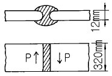
- 960.37 kgf/cm2
- 781.25 kgf/cm2
- 1152.22 kgf/cm2
- 800.85 kgf/cm2
(정답률: 알수없음)
62. 강도 이론에 의한 나선 철근 기둥의 설계 축하중강도는 얼마인가? (단, 기둥의 Ag = 2000 cm2, Ast = 6 - D35 = 57.0 cm2, fck = 210 kgf/cm2, fy = 3000 kgf/cm2)
- 295tonf
- 300tonf
- 308tonf
- 330tonf
(정답률: 알수없음)
63. 기둥에서 편심(e)이 균형편심(eb)보다 작을 때 일으키는 파괴의 형태는?
- 압축 파괴
- 인장 파괴
- 휨 파괴
- 전단 파괴
(정답률: 알수없음)
64. PC(Prestressed Concrete)의 원리를 설명할 수 있는 기본개념으로 옳지 않은 것은?
- 응력개념
- 강도개념
- 변형도개념
- 하중평형개념
(정답률: 알수없음)
65. 다음 그림에서 주철근의 배근이 잘못된 것은?
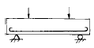
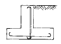
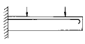
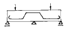
(정답률: 알수없음)
66. 전단철근의 설계기준항복강도 fy는 다음 어느 값을 초과할 수 없는가?
- 4,000㎏f/㎝2
- 4,200㎏f/㎝2
- 4,500㎏f/㎝2
- 4,800㎏f/㎝2
(정답률: 알수없음)
67. 강도 설계법으로 그림과 같은 단철근 T형단면을 설계할 때의 설명 중 옳은 것은? (단, fck=210㎏f/㎝2, fy=4,000㎏f/㎝2이다.)
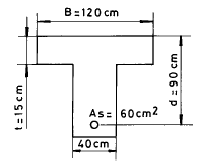
- 폭이 120㎝인 사각형단면보
- 폭이 40㎝인 사각형단면보
- T형 단면보
- T형 단면보나 사각형단면보나 상관없이 같은 값이 나온다.
(정답률: 알수없음)
68. 그림과 같은 맞대기 용접이음의 유효길이는 얼마인가?
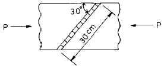
- 15cm
- 30cm
- 40cm
- 60cm
(정답률: 알수없음)
69. 강도설계법에서 콘크리트가 부담하는 공칭전단강도는 다음 중 어느 것인가 ? (단, 전단과 휨만을 받는 부재로 생각한다.)
- Vc=0.29 √fck bw·d
- Vc=0.53 √fck bw·d
- Vc=0.56 √fck bw·d
- Vc=1.25 √fck bw·d
(정답률: 알수없음)
70. 다음 중 실용적인 단철근 직사각형보에서 실제 사용되는 최대철근비(ρmax)의 한계치는? (단, ρb : 균형철근비)
- ρmax=0.75ρb
- ρmax=0.80ρb
- ρmax=0.85ρb
- ρmax=0.90ρb
(정답률: 알수없음)
71. 프리스트레싱 긴장재 한 가닥을 사용한 포스트텐션 방식의 프리스트레스트 콘크리트부재에는 발생하지 않는 손실은?
- 긴장재의 마찰
- 정착장치의 활동
- 콘크리트의 탄성수축
- 긴장재 응력의 릴랙세이션
(정답률: 알수없음)
72. b=30cm, d=50cm, As=3-D25=15.20cm2인 직사각형 단면보의 파괴 형태는? (단, 강도설계법에 의하며 fck=240kgf/cm2, fy=4,000kgf/cm2)
- 취성파괴
- 연성파괴
- 균형파괴
- 파괴되지 않는다.
(정답률: 알수없음)
73. 다음 중 용접이음을 한 경우 용접부의 결함을 나타내는 용어가 아닌 것은?
- 언더커트(undercut)
- 오우버 랩(overlap)
- 크랙(crack)
- 필렛(fillet)
(정답률: 알수없음)
74. 단철근 직사각형보에서 fy=4200kgf/cm2, fck=420kgf/cm2 일 때, 강도 설계법에 의한 균형 철근비는 얼마인가?
- 0.0313
- 0.0342
- 0.0375
- 0.0389
(정답률: 알수없음)
75. 인장 이형철근의 정착길이는 기본정착길이에 보정계수를 곱해서 구하는데, 이 때 보정계수의 산정요인으로 해당되지 않는 것은?
- 철근의 위치계수
- 철근의 형상계수
- 철근의 에폭시 도막계수
- 경량골재콘크리트 계수
(정답률: 알수없음)
76. 보통콘크리트 부재의 해당 지속 하중에 대한 탄성처짐이 3cm이었다면 크리프 및 건조수축에 따른 추가적인 장기처짐을 고려한 최종 총 처짐량은 얼마인가? (단, 하중재하기간은 10년이고, 압축철근비 ρ′ 는 0.0⑤이다.)
- 7.8cm
- 6.8cm
- 5.8cm
- 4.8cm
(정답률: 알수없음)
77. 그림의 띠철근 기둥에서 띠철근으로 D13(공칭지름 12.7mm) 및 축방향 철근으로 D35(공칭지름 34.9mm)의 철근을 사용할 때, 띠철근의 최대 수직간격은 얼마인가?
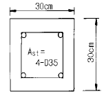
- 20cm
- 30cm
- 56cm
- 61cm
(정답률: 알수없음)
78. 강도 설계법에서 전단 보강 철근의 공칭 전단 강도 Vs가 1.06 √fck · bw· d 를 초과하지 않을 경우 전단 보강 철근의 최대 간격은? (단, bw는 복부의 폭이고, d는 유효 깊이이다.)
- d/2 이하, 60 cm 이하
- d/2 이하, 30 cm 이하
- d/4 이하, 60 cm 이하
- d/4 이하, 30 cm 이하
(정답률: 알수없음)
79. 폭 b=40cm, 유효깊이 d=60cm, 철근단면적 As=18cm2를 갖는 단철근 콘크리트 직사각형 보를 강도설계법으로 휨 설계할 때, 설계강도는 얼마인가? (콘크리트 설계기준강도 fck=280kgf/cm2, 철근항복강도 fy=4000kgf/cm2)
- 50.3 tonf·m
- 45.7 tonf·m
- 39.5 tonf·m
- 34.4 tonf·m
(정답률: 알수없음)
80. 콘크리트에 프리스트레스 60000kgf을 도입한 후 여러 가지 원인에 의하여 12500kgf의 프리스트레스 감소가 생겼다. 이 때 유효율은?
- 21%
- 30%
- 70%
- 79%
(정답률: 알수없음)
5과목: 토질 및 기초
81. 어떤 시료에 대한 일축압축 시험의 결과 파괴 압축강도가 3㎏/㎝2일 때 수평면과 45° 를 이루는 파괴면이 생겼다면 내부 마찰각 φ와 점착력 C는?
- φ = 0, C = 1.5㎏/㎝2
- φ = 0, C = 3㎏/㎝2
- φ = 90°, C = 1.5㎏/㎝2
- φ = 45°, C = 0
(정답률: 알수없음)
82. 그림과 같은 조건의 옹벽에서 벽면 마찰을 무시할 때 주동 토압계수가 0.4이다. 이때 옹벽에 작용하는 전 주동토압의 합력은? (단, 흙의 포화단위 중량은 1.8t/m3 이다.)
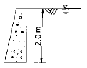
- 2.64 t/m
- 1.44 t/m
- 0.64 t/m
- 3.44 t/m
(정답률: 알수없음)
83. 지표면위에 16t의 집중하중이 작용하는 경우 깊이 4m에서 작용점 직하의 연직응력의 증가분을 Boussinesq의 식으로 구한 값은?
- 0.5765 t/m2
- 0.8765 t/m2
- 0.6765 t/m2
- 0.4775 t/m2
(정답률: 알수없음)
84. 말뚝의 지지력을 결정하기 위한 Engineering News 공식을 사용할 때 안전율은 얼마인가?
- 3
- 6
- 8
- 10
(정답률: 알수없음)
85. 샘플러 튜브(Sampler tube)의 면적비(Ca)를 9%라 하고 외경(Dw)을 6㎝라 하면 끝의 내경(De)은 얼마인가?
- 3.6㎝
- 4.8㎝
- 5.7㎝
- 6.2㎝
(정답률: 알수없음)
86. 사면 안정해석법에 관한 설명 중 틀린 것은?
- 해석법은 크게 마찰원법과 분할법으로 나눌수 있다.
- Fellenius방법은 주로 단기안정해석에 이용된다.
- Bishop 방법은 주로 장기안정해석에 이용된다.
- Bishop 방법은 절편의 양측에 작용하는 수평방향의 합력이 0이라고 가정하여 해석한다.
(정답률: 알수없음)
87. 다음 중 흙속에서의 물의 흐름이 연직유효응력의 증가를 가져오는 것은?
- 정수압상태
- 하향흐름
- 상향흐름
- 수평흐름
(정답률: 알수없음)
88. 어떤 유선망도에서 상하류면의 수두차가 4m, 등수두면의 수가 13개, 유로의 수가 7개일 때 단위폭 1m당 1일 침투 유량은 얼마인가? (단, 투수층의 투수계수 K = 2.0 × 10-4㎝/sec)
- 8.0 × 10-1m3/day
- 9.62 × 10-1m3/day
- 3.72 × 10-1m3/day
- 4.8 × 10-1m3/day
(정답률: 알수없음)
89. 제체의 침윤선에 대한 설명 중 옳은 것은?
- 흙댐이나 제체내의 자유수면을 침윤선이라 한다.
- 물 분자의 이동하는 괴적을 침윤선이라 한다.
- 흙속의 모든 유선을 침윤선이라 한다.
- 침윤선을 이용하여 침투 유량을 계산할 수 없다.
(정답률: 알수없음)
90. 선행 압밀하중(Po)에 대한 설명 중 옳지 않은 것은?
- 흙이 현재 지반에서 과거에 최대로 받았을 때의 압밀하중을 말한다.
- e - log P 곡선상에서 구한다.
- 정규압밀 점토와 과압밀 점토를 구분할 수 있다.
- 압밀 소요시간 계산에 이용된다.
(정답률: 알수없음)
91. Sand drain 공법의 주된 목적은?
- 압밀침하를 촉진시키는 것이다.
- 투수계수를 감소시키는 것이다.
- 간극수압을 증가시키는 것이다.
- 기초의 지지력을 증가시키는 것이다.
(정답률: 알수없음)
92. Terzaghi의 지지력 공식에서 고려되지 않는 것은?
- 흙의 내부 마찰각
- 기초의 근입깊이
- 압밀량
- 기초의 폭
(정답률: 50%)
93. 점토지반을 프리-로딩 (Pre-Loading) 공법등으로 미리 압밀시킨 후에 급격히 재하할 때의 안정을 검토하는 경우에 적당한 전단시험은?
- 비압밀 비배수 전단시험
- 압밀비배수 전단시험
- 압밀배수 전단시험
- 압밀완속 전단시험
(정답률: 알수없음)
94. C.B.R시험에서 지름 5cm의 피스톤이 2.5mm관입될 때 표준하중 강도는?
- 1⑤kg/cm2
- 70kg/cm2
- 125kg/cm2
- 207kg/cm2
(정답률: 알수없음)
95. 어떤 흙의 액성한계는 40%,소성한계는 20%일때 이흙의 소성지수는?
- 20%
- 60%
- 40%
- 30%
(정답률: 알수없음)
96. 다음 중 정적인 사운딩(Sounding)이 아닌 것은?
- 표준관입 시험
- 이스키메타
- 베인 시험기
- 화란식 원추관입 시험기
(정답률: 알수없음)
97. 통일 분류법에서 실트질 자갈을 표시하는 약호는?
- GW
- GP
- GM
- GC
(정답률: 알수없음)
98. 다짐에 관한 다음의 설명 중 타당하지 않은 것은?
- 사질성분이 많이 내포된 흙은 다짐곡선의 기울기가 급하다.
- 최적 함수비는 흙의 종류와 다짐방법에 따라 다르다.
- 입도분포가 양호한 흙의 건조밀도는 낮다.
- 다짐을 하면 부착성이 양호해지고 투수성과 압축성이 작아진다.
(정답률: 알수없음)
99. 항타공식을 적용하여 지지력을 산출할 때 실제와 가장 잘 부합되는 흙은?
- 조밀한 모래지반
- 연약한 점토지반
- 예민한 점토지반
- 느슨한 모래지반
(정답률: 알수없음)
100. 직경 5cm, 높이 10cm인 연약점토 공시체를 일축압축시험한 결과 파괴시 압축력이 2.2kg, 축방향변위가 9mm였다면 일축압축강도(qu)는?
- qu = 0.3 kg/cm2
- qu = 0.2 kg/cm2
- qu = 0.25 kg/cm2
- qu = 0.1 kg/cm2
(정답률: 알수없음)
6과목: 상하수도공학
101. 하수도 계획 대상유역에서 분할된 각 구역별 유출계수가 다음 표와 같을 때 전체 유역의 유출계수는?
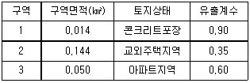
- 1.450
- 0.553
- 0.447
- 0.350
(정답률: 알수없음)
102. 침전지에서의 폐수 체류시간은 침전지의 크기와 다음 중 무엇에 의하여 결정되는가?
- 유출관의 길이
- 폐수의 유량
- BOD 농도
- 폐수내에 존재하는 세균의 양
(정답률: 알수없음)
103. 상수 원수의 수질을 검사한 결과가 다음과 같을 때 경도(hardness)를 CaCO3 농도로 표시하면 몇 mg/L 인가 (단, 분자량은 Ca : 40, Cl : 35.5, HCO3 : 61, Mg : 24, Na : 23, SO4 : 96, CaCO3 : 100 임)
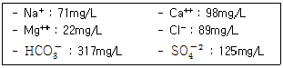
- 352.5 mg/L
- 336.7 mg/L
- 340.1 mg/L
- 370.4 mg/L
(정답률: 알수없음)
104. 어느 마을의 고지대 일부에서 상수도 수압이 너무 낮아서 물이 잘 나오지 않고 있다. 수압을 높여주기 위한 다음의 조치 중에서 옳지 않은 것은?
- 근처에 배수탑을 설치한다.
- 주위지역의 관경을 줄여준다.
- 배수펌프를 설치한다.
- 관망을 수지형에서 격자형으로 연결한다.
(정답률: 알수없음)
1⑤. 다음 중 수원의 구비조건에 해당하지 않는 것은?
- 수량이 풍부해야 한다.
- 가능한 한 낮은 곳에 위치해야 한다.
- 수질이 좋아야 한다.
- 상수 소비자에게 가까운 곳에 위치해야 한다.
(정답률: 알수없음)
106. 전양정이 45m, 유량이 38 m3/min일 때 펌프의 이론마력은 얼마인가? (단, 유체의 비중은 1 이다)
- 23 HP
- 1⑤ HP
- 190 HP
- 380 HP
(정답률: 알수없음)
107. 약품침전지의 구조에 관한 다음 설명 중 틀린 것은?
- 침전지의 수는 원칙적으로 2지 이상으로 한다.
- 각 침전지마다 독립적으로 사용 가능한 구조로 한다.
- 직사각형 침전지의 경우, 폭은 길이의 3~5배를 표준으로 한다.
- 유효수심 외에 30cm 이상의 퇴적 공간을 둔다.
(정답률: 알수없음)
108. 다음 중 철의 제거를 목적으로 하는 처리방법이 아닌 것은?
- 포기
- 활성탄처리
- 전염소처리
- 망간접촉여과
(정답률: 알수없음)
109. 우리나라 하수도 시설기준상 최소관경은 얼마로 하는가?
- 오수관거 200mm, 우수관거 및 합류관거 400mm
- 오수관거 250mm, 우수관거 및 합류관거 300mm
- 오수관거 300mm, 우수관거 및 합류관거 350mm
- 오수관거 350mm, 우수관거 및 합류관거 400mm
(정답률: 알수없음)
110. 명반(Alum)을 사용하여 상수를 침전 처리하는 경우 약품 주입 후 응집조에서 완속교반을 하는 이유는?
- 명반을 용해시키기 위하여
- 플록(floc)의 크기를 증가시키기 위하여
- 플록이 잘 부서지도록 하기 위하여
- 플록을 공기와 접촉시키기 위하여
(정답률: 알수없음)
111. 계획하수량이 25m3/sec, 관내 유속이 0.9m/sec인 하수관의 관경은 얼마인가?
- 35.95m
- 5.95m
- 5.35m
- 5.⑤m
(정답률: 알수없음)
112. 도.송수관의 설계시 평균유속의 최소한도로 옳은 것은?
- 0.1m/sec
- 0.2m/sec
- 0.3m/sec
- 0.5m/sec
(정답률: 알수없음)
113. 하수처리장의 최초 침전지에 대한 설명으로 옳은 것은?
- 직사각형 침전지의 경우 폭과 깊이의 비는 3 : 1 ~ 7 : 1로 한다.
- 표면부하율은 계획1일최대오수량에 대해 10m3/m2·day로 한다.
- 침전시간은 일반적으로 계획1일최대오수량을 기준으로 2~4시간으로 한다.
- 월류웨어의 부하율은 일반적으로 350m3/m·day 이상으로 한다.
(정답률: 알수없음)
114. 다음 중 계획1일 최대급수량 산정에 포함되지 않아도 되는 사항은?
- 배수시설에서의 누수
- 급수시설에서의 누수
- 정수장에서의 역세척수
- 취수시설에서 정수시설까지의 손실수량
(정답률: 알수없음)
115. 장래 인구의 추정에 있어 신뢰도가 적어지는 이유에 해당되지 않는 것은?
- 인구증가율이 높을수록
- 추정 목표년도가 길수록
- 인구가 감소하는 경우가 많을수록
- 과거의 인구자료가 많을수록
(정답률: 알수없음)
116. 개수로의 흐름과 관수로의 흐름을 구별하는 방법으로 가장 옳은 것은?
- 유속의 대소
- 수로 단면의 형태
- 자유수면의 유무
- 압력의 대소
(정답률: 알수없음)
117. 하수관거 설계시 지하수량은 하수량의 어느 정도로 가정하여 산정하는가?
- 10∼20%
- 20∼30%
- 30∼40%
- 40∼50%
(정답률: 알수없음)
118. 합리식 Q = (1/360)C·Ｉ·A 는 우수유출량을 계산할 때 사용된다. 다음 중 합리식에 대한 설명으로 틀린 것은?
- C는 유출계수를 의미하며 무차원이다.
- I는 유달시간 내의 평균강우강도를 나타내며 단위는 mm/hr이다.
- A는 배수면적을 의미하며 단위는 km2이다.
- Q는 최대계획우수유출량을 의미하며 단위는 m3/sec이다.
(정답률: 알수없음)
119. 계획1인1일 평균급수량에 대한 설명 중 틀린 것은?
- 도시규모가 클수록 평균급수량은 증가한다.
- 생활수준이 높을수록 평균급수량은 증가한다.
- 수압이 낮을수록 평균급수량은 증가한다.
- 누수량이 많을수록 평균급수량은 증가한다.
(정답률: 알수없음)
120. 침전 슬러지를 농축하여 함수율 99%를 함수율 95%로 만들었다. 원 슬러지(함수율 99%)의 유입량이 1000m3/day 일 때 농축후 슬러지의 양은? (단, 농축 전·후 슬러지의 비중은 모두 1.0으로 가정)
- 200 m3/day
- 250 m3/day
- 750 m3/day
- 960 m3/day
(정답률: 알수없음)
그리고 T1과 T2는 각각 A와 C점에서 수직으로 작용하는 힘이므로, 이들은 각각 300kgf/2 = 150kgf의 크기를 가진다.
따라서 T2는 C점에서 수평으로 작용하는 힘과 수직으로 작용하는 힘의 합력이므로, 피타고라스의 정리를 이용하여 T2 = √(1502 + 3002) = 500kgf가 된다.
따라서 정답은 "500kgf"이다.